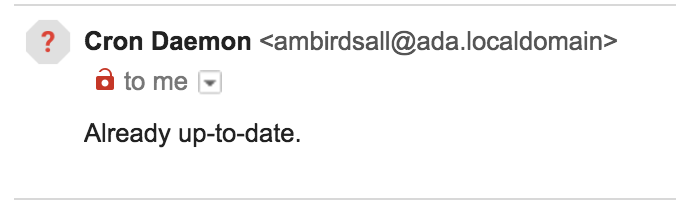

I thought it would be cool to get my computer to automatically run brew
update every so often in the background and email me if anything went wrong. I
thought it would be pretty simple! It was not, in fact, prety simple: I ran
into a bunch of super frustrating errors, usually because I was taking some
aspect of my normal terminal environment for granted (the $PATH variable that
tells the shell where to look to find commands; email protocols and
authentication; ssh authentication; error handling in the shell; etc etc etc).
But I learned a bunch in the process! So kick back, pour yourself a drink, and
learn about cron, the old-school unix tool you can use to run programs behind
your own back.
What is a cron and how does it... cron?
Cron is an old unix program used to run commands repeatedly on a schedule.
There are two main parts to the cron system: there is the cron daemon, a
program that (once set up) is constantly running in the background; and there
is the crontab file, which keeps the schedule of programs to run <%=
1. Once every minute on the minute,
assuming your computer is awake and running, the cron daemon (the system
automatically launches cron after you save your first valid crontab file, and
on boot afterwards) evaluates each line of all of the relevant installed
crontab files, running any commands whose schedules match on the current
minute. Any output to $STDERR is assumed to be an error and is mailed to you:
cron's default mailing strategy is a local "mailbox" originally used for
pre-internet user-to-user messages within a multi-user system, but if you're
fancy with the google, it's pretty manageable to teach it to use something like
gmail instead.
The crontab file
You edit the crontab file with the command crontab -e, regardless of where
you are in the filesystem. You need to do some config to use this; more on that
later.
Each line either contains a shell variable definition, in which case cron
updates its environment accordingly2, or a
scheduled command. Scheduled commands are structured like this:
* * * * * /absolute/path/of/command/to/execute
│ │ │ │ │
│ │ │ │ └─── day of week (0 - 7) (0 to 6 are Sunday to Saturday, or use names; 7 is Sunday, the same as 0)
│ │ │ └──────── month (1 - 12)
│ │ └───────────── day of month (1 - 31)
│ └────────────────── hour (0 - 23)
└─────────────────────── min (0 - 59)For any element of a schedule (hours, minutes, etc), you can use:
* matches every value
- defines a range, like `9-17` for every hour from 9AM to 5PM
, separates multiple individual values, such as `MON,WED,FRI`So, for example 0 9-17 * * 1-5 matches each hour from 9AM to 5PM on the hour,
each weekday, with no restrictions by month or day of month.
Editing crontab takes special config, because life is suffering
So crontab -e opens the file with whatever your have set to $EDITOR in your
shell session. I use vim, which is secretly a problem: the crontab program
sets some rules about how you save the file, and vim's defaults work
differently.
Specifically, when vim writes changes to a file, it first saves them as a
backup file, then overwrites the original. This helps vim be more confident it
won't corrupt data if it crashes partway through writing, but crontab won't
let you write to anything but the file itself, in-place. To get around this,
add to ~/.vimrc:
autocmd filetype crontab setlocal nobackup nowritebackup<%= section %q{cron doesn't have a lot of things I took for granted about the shell environment} %>
This isn't that bad to deal with once you get your head around it, but it took
me a while to realize just how much implicit environment I rely on when working
in a terminal. The main one is the $PATH variable: for every command that
isn't built-in shell syntax, odds are good you'll need to prepend the /bin/
or /usr/local/bin/ or /usr/sbin/ or what have you. If you don't know the
full path of some command you use a lot, for example, git, pop open a
terminal and run which git.
My first instinct was to make one of my crontab file's first lines something like
PATH=/Users/ambirdsall/bin:/usr/local/bin:/usr/bin:/bin:/I/dunno/maybe/sbin:/other/things/I'm/used/to/alsoIf my crontab environment has access to all the same stuff I use everyday in my terminal, then writing a cron command is just like writing any old terminal command. But I think that's the wrong approach, for two reasons:
- Anything more complicated than a one-liner (and even many of those), you're better off just saving in a shell script
- If you succeed, you've just hidden from yourself how things work under the hood AND made it easier for part of your terminal-based life to get out of sync.
If you feel a little lost when working with the full absolute paths of programs
and would like a better handle on why different programs live in /bin vs
'/sbin' vs /usr/sbin vs /usr/local/bin—or even why some programs live in
more than one of those places—just run man hier in your terminal and give it
a quick read.
Let's put almost all of it together
Disclaimer: we're skipping over some hoops I had to jump through to send actual
emails to my gmail account from the command line (google it) and the way
thornier issue of how to authenticate an SSH connection with github (which is
where brew searches for updates) in a bare-bones scripting environment
(google "askpass" or go really HAM and learn to use expect). So:
0 * * * * /usr/local/bin/brew updatewill run brew update every hour on the hour, every single day, with zero
conscious effort on my part. Awesome! Awesome.
Wait, this is actually awesome, right?

Goddamn it.
Okay, let's just go through one of the dumb problems
Here's what was going on:
- If everything is up to date,
brewexits with a heads-up to$STDERR - Seeing a message in the error stream,
cronemailed me - I don't want email alerts every hour that things are still up-to-date
So:
/usr/local/bin/brew update 2>&1 > /dev/null | grep -v 'up-to-date' >&2First, a quick note: I use zsh, not bash, and there are a few differences
in how the two shells handle redirection, so if you use bash, you might
need to make a few changes to get it working properly
3. Let's break this down:
2>&1 > /dev/nullThe 2>&1 redirects $STDERR to $STDOUT. The > /dev/null redirects
$STDOUT to the Pit of Despair. If you think this seems like it will redirect
EVERYTHING to /dev/null, leaving you nothing useful to work with, you think
like I do. But it doesn't! Whatever redirections you specify don't take effect
until the next pipe (or the end of the pipeline if there is no next pipe). It
makes sense: this system lets you redirect a bunch of things
4 to each
others' old handles at the same time without having to worry too much about
overwriting important data streams because of accidental collisions along the
way.
grep -v 'up-to-date'So it's the contents of $STDERR alone going through that pipe. Nice. grep's
-v flag reverses the pattern, meaning lines that DON'T contain 'up-to-date'
are printed. Effectively, this filters out the 'up-to-date' error while letting
other errors pass through.
>&2The last token there, >&2, redirects this filtered error stream from $STDOUT
back to $STDERR; if anything else goes wrong, cron will email as it should,
but it won't spam my inbox with nonsense just because I'm already good.
NICE.
Nice. Now go forth and automate the fuck out of some stuff!
-
Depending on your operating system, there might be both system-wide crontabs and user-specific crontab files; I'm only going to discuss systems with a single crontab file here.
↩ -
Setting
↩$SHELL,$PATH, and$MAILTOcorrectly is quite important, and worth some googling if you have questions. -
If you don't know what shell you're using, it's probably
↩bash, but you can check by runningecho $SHELL. -
There's no rule that says
↩$STDIN,$STDOUT, and$STDERRare the only file descriptors your process can have open, after all.